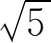
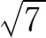
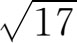
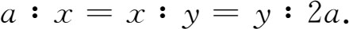
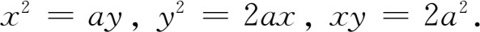
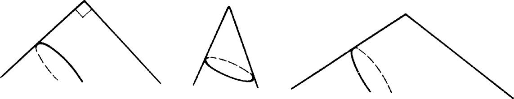
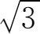
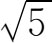
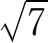

8．柏拉图学派
继诡辩学派之后领导数学活动的是柏拉图派。这派学者的先驱者是北非昔勒尼（Cyrene）地方的特奥多鲁斯（Theodorus，生于公元前470年左右）和意大利南部太兰吐姆的阿基塔斯。他们是毕达哥拉斯派学者，并且都教过柏拉图。他们的教导可能使整个柏拉图学派受到毕达哥拉斯派的强烈影响。
特奥多鲁斯因证明我们今日记为，

，
，…，
的这些比同1没有公度一事而闻名。阿基塔斯引入把曲线作为动点的轨迹，把曲面作为是由曲线移动而产生的看法。他还从求出两已给量之间的两个比例中项来解决倍立方问题。这两个比例中项他是用几何方法在求出三个曲面交点之后作出的。这三个曲面是圆绕其一切线旋转而生成的曲面、一个锥面、一个柱面。这种作法很麻烦，不值得在这里占篇幅。阿基塔斯还写了关于数学力学的书，设计过机器，研究过声学，对音阶作出过创造并制定出一些理论。柏拉图学派的领袖是柏拉图，成员有梅内克缪斯（Menaechmus，公元前4世纪）、他的兄弟狄诺斯特拉德斯（Dinostratus，公元前4世纪），以及特埃特图斯（Theaetetus，公元前约415—约前369）。其他许多成员我们只知道名字。
柏拉图出生于名门，早年就有政治抱负。但苏格拉底的命运使他深信有良心的人不能搞政治。他游历过埃及并在意大利南部交游于毕达哥拉斯派学者之间。毕达哥拉斯派对他的影响可能是通过这些接触得来的。公元前387年左右他在雅典成立学院，它在好多方面像现代的大学。学院有场地、房屋、学生，并有柏拉图及其助手讲授的正式课程。在古希腊时期，数学和哲学是学院里所喜爱的学科。数学的主要活动中心虽在公元前300年左右移到亚历山大，但在整个亚历山大时代学院派仍旧领导哲学界。学院维持了九百年之久，直到529年因它传授“异端邪说”被信奉基督教的罗马王查士丁尼（Justinian）查封。
柏拉图是他那时代最有学问的人，但他不是数学家；不过他热心这门科学，并深信其对哲学和了解宇宙的重要作用，这就鼓励了数学家们钻研数学。值得指出的是，公元前4世纪时几乎所有重要的数学工作都是柏拉图的朋友和学生搞的。柏拉图本人则似乎更关心把已有的数学知识加以改进并使之完美。
虽然我们也许不能确定，在柏拉图之前数学概念的抽象化究竟搞到什么程度，但柏拉图和他的后继者无疑是把数学概念看作抽象物的。柏拉图说数同几何概念不含物质性，因而和具体事物不相同。数学概念不依赖于经验而自有其实在性。它们只能为人所发现，并非为人所发明或塑造。抽象事物同物质对象之间的这种区分可能得自苏格拉底。
我们引录柏拉图《理想国》（Republic）中的一段话，由此可以说明当时对数学概念的看法。苏格拉底对格劳孔（Glaucon）说：
整个算术和计算都要用到数。
是的……
因此这就是我们所追求的那种学问，它有双重用途——军事上的和哲学上的；因为打仗的人必须学习数的技巧，否则他就不知道如何布置他的部队，哲学家也要学，因为他必须跳出茫如大海的万变现象而抓住真正的实质，所以他必须是个算术家……因此这是可以在立法上适当规定的那种学问；而我们必须竭力奉劝我国未来的主人翁学习算术，不是像业余爱好者那样来学，而必须学到他们唯有靠心智才能认识数的性质那种程度；也不像商人和小贩那样，仅是为着做买卖去学，而是为了它在军事上的应用，为了灵魂本身去学的；而且又因为这是使灵魂从暂存过渡到真理和永存的捷径……我所说的意思是算术有很伟大和崇高的作用，它迫使灵魂用抽象的数来进行推理，而厌弃在辩论中引入可见和可捉摸的对象……(5)
另一段引文(6)是讨论几何概念的。柏拉图说：“你是否也知道，他们虽继续利用可见的形象并拿来进行推理，但他们想的并不是这些东西，而是类似于这些东西的理想形象……但他们力求看到事物本身，而这只有用心灵之目才能看到。”
从这些引述显然可知柏拉图以及他所代表发言的其他希腊人重视抽象观念，并要把数学思想当作进入哲学的阶梯。数学家所处理的抽象观念跟其他的抽象观念，比如善良和公正，是同一类的，而了解这两者乃是柏拉图哲学的目标。数学是认识理想世界的准备工具。
为什么希腊人爱好并强调数学的抽象概念呢？我们不能回答这个问题，但应指出早期希腊数学家是哲学家，而哲学家普遍地对希腊数学的发展有着决定性的影响。哲学家喜欢搞观念，并在许多领域里显出他们偏于搞抽象的典型作风。希腊哲学家对于真理、善良、慈爱和智慧就是这样来思考的。他们设想理想的社会和完善的国家。晚期毕达哥拉斯派学者和柏拉图派学者把观念世界和实物世界严格区别开来。物质世界中的关系是会变的，因而并不代表终极真理，但理想世界中的关系是不变的，因而是绝对真理；而绝对真理才是哲学家应该关心的。
柏拉图这人特别相信唯有具体对象的完美理想才是实在。唯有理想世界以及理想间的关系才是永恒的，不受时代影响的，不朽的，而且是普遍的。物理世界是理想世界的不完善的体现，因而它是会枯朽的，所以只有理想世界才值得进行研究。只有在纯理性的形式上，才能获得绝对正确的知识。关于物理世界我们只能有人们的种种意见；因而物理科学陷落在感觉世界的糟粕之中了。
柏拉图学派是否对数学的演绎结构作出过贡献，我们不能肯定。他们关心证明，关心推理过程的方法论，普罗克洛斯和第欧根尼（Diogenes Laertius，3世纪）把两类方法论归功于柏拉图学派。第一类是分析方法，用这方法时，我们把待证的事项作为已知，然后由此推导出一些结论，直到得出一个已知的真理或得到矛盾。若得出矛盾，则待证的结论谬误。若得出一个已知真理，则（如若可能）便把推理步骤倒过来，于是就作出证明。第二类是归谬法或间接法。第一类方法对柏拉图来说也许并不新鲜，但可能他要强调其后有加以综合的必要。至于间接法，如前所说，则有人归功于希波克拉底。
演绎结构在柏拉图心目中的地位如何，最好用《理想国》(7)中的一段话来加以说明。他说：
你们知道几何、算术和有关科学的学生，在他们的各科分支里，假定奇数和偶数、图形以及三种类型的角等是已知的；这些是他们的假设，是大家认为他们以及所有人都知道的事，因而认为是无需向他们自己或向别人再作任何交代的；但他们是从这些事实出发的，并以前后一贯的方式往下推，直到得出结论。
如果这段话确实道出了当时数学的状况，那么他们肯定是作证明的，不过公理基础却不是明显的，或者可能随不同的数学家而稍有不同。
柏拉图确乎肯定知识有加以演绎整理的需要。科学的任务是发现（理想）自然界的结构，并把它在演绎系统里表述出来。柏拉图是第一个把严密推理法则加以系统化的人，而大家认为他的门人按逻辑次序整理了定理。我们还知道柏拉图的学院里曾提出过这样的疑问，即根据已知的事实和问题中给定的假设，所给问题究竟是否可解。不管柏拉图派有否根据明确的公理真正用演绎法整理过数学，有一点是毋庸置疑的，即至少从柏拉图时代起，数学上要求根据一些公认的原理作出演绎证明。由于坚持要有这种形式的证明，希腊人得以把此前几千年来数学里的所有法则、步骤和事实全部抛弃。
为什么希腊人坚持要作演绎证明呢？既然归纳、观察和实验一直是获得知识的重要来源，并且被各门科学用得很多很好，那为什么希腊人喜欢在数学里用演绎推理而排斥其他一切方法呢？我们知道希腊人（人们称之为有哲学思想的几何学家）喜欢搞推理和设想，这从他们对哲学、逻辑和理论科学所作出的巨大贡献可以得到证明。另外，哲学家是关心于获得真理的，而归纳、实验以及根据经验作出的一般结论只能给出可能正确的知识，而演绎法在前提正确的条件下则给出绝对肯定的结果。在古希腊社会中，数学是哲学家所追求的真理总体的一部分，因而认为必须是演绎性的。
希腊人喜欢演绎法的另一个原因可能是由于古希腊时期享受教育的阶级轻视实际事务。雅典虽是商业中心，但从事商业和医药之类行业的是奴隶阶级。柏拉图坚决主张自由民搞买卖应看作是犯罪而要受到惩罚，亚里士多德也说在完善的国家里公民（相对于奴隶而言）不应该搞任何机械行业，对于这种社会里的思想家来说，实验和观察就成为陌生的事。因此科学或数学上的结果都不会从这种来源得出。
顺便提起一点，有证据可以说明公元前6世纪和前5世纪时希腊人对工作、贸易和机械技巧的看法与此不同，并且他们曾把数学应用于实际技术。泰勒斯曾用他的数学知识来改进航海技术。公元前6世纪时的希腊统治者梭伦（Solon）给予各种匠人以荣誉并宠崇发明者。Sophia这个希腊字通常用来表示明智和抽象思维，而在当时的意思却是专业技能。据普罗克洛斯说，把“数学变成自由学科”（即是说，教给自由民的学问而不是传给奴隶的技巧）的正是毕达哥拉斯派人。
普卢塔赫在所写马塞勒斯（Marcellus）的传记里具体说出了人们对机械工具这类东西的态度是怎样改变的：
欧多克索斯和阿基塔斯是这一闻名的、高度受人珍视的机械技能的首创人。他们用机械工具来巧妙地说明几何真理，并从实验上以此来证实那些用图形和言语证起来过于复杂的结论，使人看了一目了然便能信服。例如，给定两线求其两个比例中线的问题是许多作图题里常要碰到的，这两位数学家在解决这问题时都借助于仪器，使其适用于他们所需要的某些曲线和线段。但由于柏拉图对此表示愤慨，并由于他对此大加谴责，说它只不过是搞坏和消灭了几何学的一个优点，使其如此可耻地不顾纯理智的抽象对象，而回复到感性，并求助（这种帮助非得卑躬屈膝丧尽尊严才能获得）于物质。由于这种谴责，就产生了这样的情况，使机械学（力学）和数学分了家，并由于它被哲学家所蔑弃和忽视，它就只在军事技术上占有地位了。
这就可以说明为什么古希腊时代的实验科学和机械科学发展得那么差劲。
不管历史研究的结果有没有把希腊人何以偏爱演绎推理的有关因素一个个找出来，我们肯定知道他们最早坚持数学里必须用演绎推理作为求证的唯一方法。自此以后这便成为数学所特有的要求，并使数学区别于所有别的知识领域或研究领域。不过后代数学家对这一原则忠实恪守到什么程度，还有待于此后的考察。
就数学内容而论，柏拉图和他的学派改进了定义，并据说也证明了平面几何中的新定理。此外，他们推动了对立体几何的研究。柏拉图在《理想国》的第七篇528节中说，由于天文学是同运动着的立体打交道的，故在研究天文学以前需要懂得这种立体的科学。但是（他说）这种科学被人忽视了。他抱怨国家没有支持研究立体图形的人。柏拉图和他的同事着手研究立体几何，并据说证明了新的定理。他们研究了棱柱、棱锥、圆柱和圆锥；而且他们知道正多面体最多只有五种。毕达哥拉斯派无疑知道，他们可以用4，8，20个等边三角形做出其中的三种正多面体，用6个正方形做成立方体，并用12个正五边形做成正十二面体，但关于正多面体不能多于五种这一事实，则可能是由特埃特图斯所证明的。
柏拉图派的最重要发现是圆锥曲线。亚历山大时代的埃拉托斯特尼把这个发现归功于梅内克缪斯。此人是几何学家兼天文学家，他是欧多克索斯的学生，但系柏拉图学院中的一员。我们虽不能肯定发现圆锥曲线的起因，但一般相信这是由于解那几个著名的作图题而引起的。前面已经讲过开奥斯的希波克拉底解决了倍立方问题，其法是求出这样的x和y，使

但这些方程无异于

所以从坐标几何可知x和y就是两抛物线的交点或一抛物线和一双曲线的交点的坐标。梅内克缪斯研究了这问题，并看出两种纯粹用几何方法的解法。根据数学史家诺伊格鲍尔（Otto Neugebauer，1899—1990）的意见，圆锥曲线可能是在制作日规的工作过程中搞出来的。
梅内克缪斯是这样引入圆锥曲线的：他利用三种圆锥（图3.12）——直角的、锐角的和钝角的圆锥，再用垂直于锥面一母线的平面来割每个锥面。当时他们只知道双曲线的一个支。

图3.12
柏拉图学派的其他数学研究工作中还包括特埃特图斯对不可公度量的研究。在这之前，昔勒尼的特奥多鲁斯已证明（用我们的记法和语言）

，
，
和其他一些平方根是无理数。特埃特图斯考察了其他一些而且属于更高类型的无理数并将其分类。以后在研究欧几里得《原本》第十篇时，我们将指出这些类型。我们从特埃特图斯的这一工作中看出数系是怎样推广到更多的无理数的，但他所研究的那些不可公度比只是在几何的想法中产生的，而且是能用几何方法作为长度画出的。另一柏拉图派学者狄诺斯特拉德斯指出怎样用希比亚斯的割圆曲线来化圆为方。据帕普斯说，老阿里斯塔俄斯（Aristaeus the Elder，约公元前320年）写过一本包含五篇的书，叫《圆锥曲线述要》（Elements of Conic Sections）。